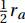
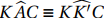

3.5 Raios Tritangentes
Notação: Salvo indicação em contrário, o raio da circunferência inscrita (ou, simplesmente, o inraio de um triângulo) será denotado por r, e o raio da circunferência ex-inscrita (ou, mais brevemente, o exraio dos vértices A, B, C) do triângulo ΔABC por ra, rb, rc , respectivamente.
Os quatro raios serão referidos como raios tritangentes do triângulo ΔABC.
O teorema a seguir relaciona o inraio r de um triângulo ΔABC, sua área (ABC) e o semiperímetro p.
Seja (ABC) a área do triângulo ΔABC em que a = BC, b = AC e c = AB. Seja 2p = a + b + c seu perímetro. O inraio r de um triângulo é igual à área (ABC) dividida pelo semiperímetro p.
Se (ABC) é a área do triângulo ΔABC, verificaremos que (ABC) = pr. Temos:
$$(ABC) = \text{área} (ABI) + \text{área} (BCI) + \text{área} (CAI)$$ Note que os três triângulos tem altura igual ao inraio r. Daí: $$(ABC) = \frac{1}{2} rc + \frac{1}{2} ra + \frac{1}{2} rb.$$
Deixando r em evidência, chegamos a igualdade: $$(ABC) = \frac{1}{2} r (a + b + c) = pr.$$
Seja (ABC) a área do triângulo ΔABC em que a = BC, b = AC e c = AB. Seja 2p = a + b + c seu perímetro. Um exraio ra de um triângulo ΔABC é igual à área (ABC) dividida pela diferença entre p e o lado a.
Deseja-se mostrar que $$r_a = \frac{(ABC)}{(p-a)}.$$ Para os exraios rb e rc é análogo.
Se (ABC) é a área do triângulo ΔABC, então: $$(ABC) = \text{área ~} (ABI_{a}) + \text{área ~} (ACI_{a}) - \text{área ~} (BCI_{a}).$$
Como ra é altura dos três triângulos de base a, b e c, tem-se: $$(ABC) = \frac{1}{2} cr_{a} + \frac{1}{2} br_{a} - \frac{1}{2} ar_{a}$$ e deixando  em evidência, e substituindo b + c por 2p - a, temos:
\begin{align*} (ABC) &= \frac{1}{2} r_{a}(b + c - a) \\ &= \frac{1}{2} r_{a}(2p - a - a)\\ &= r_{a}(p - a). \\ \end{align*}
O produto dos quatro raios tritangentes de um triângulo é igual ao quadrado de sua área, ou seja, $$r \cdot r_a \cdot r_b \cdot r_c = (ABC)^2.$$
Temos que a área (ABC) de um triângulo pode ser calculada por: $$(ABC) = \sqrt{p(p - a)(p - b)(p - c)}$$ em que a, b e c são as medidas dos lados e p é o semiperímetro do triângulo ΔABC. Tal fórmula é conhecida como Fórmula de Heron e sua demonstração pode ser encontrada no artigo: Pitágoras, Heron, Brahmagupta... Marlise Vogt.pdf.
Tomando o produto entre os raios tritangentes, e aplicando o Teorema 3.29 e a Fórmula de Heron, temos:
\begin{align*} r.r_{a}.r_{b}.r_{c} &= \frac{(ABC)}{p}. \frac{(ABC)}{(p - a)}. \frac{(ABC)}{(p - b)}. \frac{(ABC)}{(p - c)} \\ &= \frac{(ABC)^{4}}{p(p - a)(p - b)(p - c)} \\ &= \frac{(ABC)^{4}}{(ABC)^{2}} = (ABC)^{2}. \end{align*}
O inverso do inraio é igual à soma dos inversos dos três exraios do triângulo, ou seja, $$\frac{1}{r_{a}} + \frac{1}{r_{b}} + \frac{1}{r_{c}} = \frac{1}{r}.$$
Aplicando os resultados obtidos no Teorema {teo133}, tem-se: \begin{align*} \frac{1}{r_{a}} + \frac{1}{r_{b}} + \frac{1}{r_{c}} &= \frac{(p - a)}{(ABC)} + \frac{(p - b)}{(ABC)} + \frac{(p - a)}{(ABC)} \\ &= \frac{(p - a) + (p - b) + (p - c)}{(ABC)} \\ &= \frac{3p - (a + b + c)}{(ABC)} \\ &= \frac{3p - (2p)}{(ABC)} = \frac{p}{(ABC)}\\ &= \frac{1}{r}. \end{align*}
O inverso do inraio de um triângulo ΔABC é igual a soma dos inversos das alturas do triângulo dado, ou seja, $$\frac{1}{r} = \frac{1}{h_{a}} + \frac{1}{h_{b}} + \frac{1}{h_{c}},$$ em que ha, hb e hc são suas alturas.
Seja um triângulo ΔABC e suas alturas ha, hb e hc.Tem-se: \begin{align*} 2S &= 2 pr = ah_{a} = bh_{b} = ch_{c}\\ &= \frac{2p}{\frac{1}{r}} = \frac{a}{\frac{1}{h_{a}}} = \frac{b}{\frac{1}{h_{b}}} = \frac{c}{\frac{1}{h_{c}}}\\ \text{e, por propriedade das proporções,}\\ &= \frac{2p}{\frac{1}{r}} = \frac{(a + b + c)}{\frac{1}{h_{a}} + \frac{1}{h_{b}} + \frac{1}{h_{c}}}. \end{align*}
Uma vez que 2p = (a + b + c), temos: $$\frac{1}{r} = \frac{1}{h_{a}} + \frac{1}{h_{b}} + \frac{1}{h_{c}}$$
A soma dos inversos dos exraios de um triângulo é igual à soma dos inversos das alturas.
Como já foi mostrado no Corolário 3.31, $$\frac{1}{r_{a}} + \frac{1}{r_{b}} + \frac{1}{r_{c}} = \frac{1}{r}$$ mas pelo Teorema Teorema 3.32 $$\frac{1}{r} = \frac{1}{h_{a}} + \frac{1}{h_{b}} + \frac{1}{h_{c}} $$ Portanto, $$\frac{1}{r_{a}} + \frac{1}{r_{b}} + \frac{1}{r_{c}} = \frac{1}{h_{a}} + \frac{1}{h_{b}} + \frac{1}{h_{c}} $$
Dados um triângulo ΔABC, seu inraio r e seu exraio ra (ou rb ou rc), relativo ao lado a (ou b ou c). Se em uma reta arbitrária os segmentos PD = r, DQ = ra (ou DQ = rb ou DQ = rc) são transportados em sentidos opostos, e é construído N o conjugado harmônico de D em relação a P e a Q, então o segmento ND é congruente à altura ha (ou hb ou hc) do triângulo.
O Teorema 3.34 sugere que, em um triângulo ΔABC, uma altura AD, relativa ao vértice A, é dividida harmonicamente pelos pontos P (interno do segmento AD) e o ponto Q (externo do segmento AD) desde que PD = r e DQ = ra, veja Figura Figura 3.38:
Como mostrado no Teorema 3.20, dois centros tritangentes dividem harmonicamente a bissetriz interna de um ângulo. Pelo Teorema Teorema 3.3 os pontos A, P, D e Q são harmônicos, tais que $$\frac{QD}{DP} = \frac{QA}{PA} = \frac{p}{q}.$$
Em um triângulo ΔABC em que a = BC, b = AC e c = AB, a altura ha se relaciona com o inraio r e o exraio ra relativo ao lado a, pela fórmula: $$h_a = \frac{2 rr_{a}}{(r_{a} - r)}.$$
Com este corolário é possível determinar a altura de um triângulo ΔABC relativa a um lado a se forem conhecidos o inraio e o exraio relativo ao mesmo lado.
O ponto D, ilustrado na Figura 3.38, obviamente divide o segmento QP interidnte na razão $$\frac{QD}{DP} = \frac{r_{a}}{r}$$ daí, usando o Corolário 3.2, observando que neste corolário, a representa o segmento dividido e b representa o segmento dos pontos divisores; e tomando AD = b = ha e temos, $$\frac{r_a}{r} = \frac{p}{q} \text{ e } PQ = a = (r_a + r),$$ assim: $$h_{a} = \frac{2 (r_{a} + r) r_{a}r}{(r_{a}^2 - r^2)} = \frac{2 rr_{a}}{(r_{a} - r)}.$$
As relações para as alturas hb e hc são análogas.
O mesmo resultado também é obtido se forem utilizados os Teoremas 3.29 e 3.30: $$2S = ah_{a} = 2pr \qquad \text{e} \qquad 2S = ah_{a} = 2 (p - a) r_{a};$$ nos dois casos, tomando a segunda igualdade e substituindo p: $$a (h_{a} - r) = (b + c)r, \qquad \text{e} \qquad a(h_{a} + r_{a}) = (b + c)r_{a},$$ e dividindo, destas, a primeira pela segunda equação, membro a membro obtemos: $$\frac{(h_{a} - r)}{(h_{a} + r_{a})} = \frac{r}{r_{a}}.$$
Finalmente, isolando ha, obtemos $$h_a = \frac{2 rr_{a}}{(r_{a} - r)}$$.
Nota: Os pontos P e Q dividem a altura AD interna e exteriormente na razão (Teorema 3.1): $$\frac{(r_{a} - r)}{(r_{a} + r)}.$$
Se em uma reta arbitrária os segmentos DR = rb, DS = rc são dispostos, no mesmo sentido, e é construído o conjugado harmônico A de D em relação a R e S, o segmento AD é igual à altura ha de um triângulo ΔABC.
Suponha um ponto N construído conforme anunciado, ou seja, N é conjugado harmônico de D em relação a R e S (Figura 3.40). É necessário verificar que $$\overline{A'D} = h_a.$$
Pelo Teorema 3.20 os pontos Ib e Ic dividem harmonicamente a bissetriz externa que contém AIc, sendo A o vértice de um triângulo (Figura 3.40).
Os pés R e S das perpendiculares dos pontos Ib e Ic sobre a reta dividem o segmento AD harmonicamente (Teorema 3.3 de modo que A é o conjugado harmônico de D, portanto, ND ≡ AD = ha.
A altura ha de um triângulo ΔABC se relaciona com os exraios rb e rc pela fórmula: $$h_{a} = \frac{2 r_{b}r_{c}}{(r_{b} + r_{c})}.$$ As fórmulas para hb e hc são análogas.
Com este corolário, desde que sejam conhecidos dois exraios relativos a dois lados do triângulo, é possível calcular a altura do triângulo relativa ao terceiro lado (Figura 3.39).
O ponto D obviamente divide o segmento RS = r_{b} - r_{c} exteriormente na razão $$\frac{RD}{SD} = \frac{r_{b}}{r_{c}};$$ daí, usando o Corolário 3.2 e tomando $$ND = b = h_a \text{, } RS = a = (r_b - r_c)\text{, } \frac{r_{b}}{r_{c}} = \frac{p}{q}$$ (p está para rb assim como q está para rc) tem-se: $$h_{a} = \frac{2 (r_{b} - r_{c}) r_{b}r_{c}}{(r_{b}^2 - r_{c}^2)} = \frac{2 r_{b}r_{c}}{(r_{b} + r_{c})}.$$
Outro modo de obter este resultado é pelo Teorema Teorema 3.29: $$2S = ah_{a} = (a + c - b)r_{b} \qquad \text{e} \qquad 2S = ah_{a} = (a + b - c)r_{c};$$ consequentemente: $$a (h_{a} - r_{b}) = (c - b)r_{b}, \qquad \text{e} \qquad a(r_{c} - h_{a}) = (c - b)r_{c},$$ e dividindo as equações membro a membro: $\frac{(h_{a} - r_{b})}{(r_{c} - h_{a})} = \frac{r_{b}}{r_{c}}$.
Isolando ha, obtemos: $$h_{a} = \frac{2 r_{b}r_{c}}{(r_{b} + r_{c})}.$$
Nota: Pelo Teorema 3.1 os pontos S, R dividem a altura AD interna e exteriormente na razão $$\frac{(r_{b} - r_{c})}{(r_{b} + r_{c})}.$$
Considere agora um triângulo ΔABC e sua circunferência circunscrita de centro O e raio R.
Seja A' o ponto médio do lado BC e sejam X, Xa, Xb e Xc os pés das perpendiculares dos centros tritangentes, respectivamente, I, Ia, Ib, Ic, sobre o lado BC. Seja IJ um segmento paralelo ao lado BC, a partir do centro I e que intersecta tanto o diâmetro KK' no ponto K'', quanto o prolongamento de IaXa, produzindo J.
Em um triângulo ΔABC, conhecidos o raio R da circunferência circunscrita e o lado a (ou respectivamente: b, c), obtemos (ra - r) (ou respectivamente (rb - r), (rc - r)), ou seja, $$(r_a - r) = 2\left[ R - \sqrt{R^2 - \frac{a^2}{4}} \right]$$
O Teorema 3.38 relaciona um lado a do triângulo, o raio da circunferência circunscrita, e a diferença entre o exraio relativo ao lado a e o inraio, e para os demais lados é análogo.
Considere o lado BC e BC = a, além disso, suponha que sejam conhecidas as medidas R e a. Deseja-se verificar que a diferença (ra - r) pode ser obtida.
Sendo o ponto K o ponto médio do lado IIa (Teorema 3.22) do triângulo ΔIJIa, temos: $$A'K + A'K" = KK" = \frac{1}{2} I_{a}J = \frac{1}{2}(I_{a}X_{a} + X_{a}J) \text{,}$$ mas $$A'K" = X_{a}J = r ~~~\text{e}~~~ I_{a}X_{a} = r_{a}\text{;}$$ então: $$A'K = \frac{1}{2}(r_{a} - r).$$
Por outro lado, observando na Figura 3.41, A'K pode ser determinado ao aplicar o Teorema de Pitágoras no triângulo retângulo ΔA'OC, dando-nos: (OC)2 = (A'O)2 + (A'C)2, em que A'O = R - A'K, daí, A'K = R - A'O. Além disto, A'C = a ⋅ 1⁄2 $A'C = \frac{a}{2}$ e OC = R.
Fazendo as devidas substituições, obtemos a relação: $$A'K = R - \sqrt{R^2 - \frac{a^2}{4}}.$$ Além disso, $$(r_{a} - r) = 2A'K.$$
Portanto, quando R e a são dados, o segmento A'K é determinado, então tem-se os parâmetros: R, a, ra - r.
O Teorema 3.39 é semelhante ao Teorema 3.38, no entanto a relação está para a soma de dois exraios em vez de a diferença entre o inraio e um exraio.
Em um triângulo ΔABC, conhecidos o raio R da circunferência circunscrita e a medida do lado a (ou respectivamente: b, c), obtemos (rb + rc) (ou respectivamente: (ra + rc), (ra + rb)).
Considere em um triângulo o lado BC cuja medida é a. Conhecido o raio R da circunferência circunscrita, deseja-se mostrar que é possível determinar a soma dos exraios relativos aos lados AC e AB.
Observe na Figura 3.41 que o ponto K' é o ponto médio do lado IbIc do trapézio IbIcXcXb, conforme mostrado no Teorema 3.22, daí tem-se: $$A'K' = \frac{1}{2}(I_{b}X_{b} + I_{c}X_{c}) = \frac{1}{2}(r_{b} + r_{c}).$$
Além disso, \begin{align*} A'K' &= K'K - A'K \\ &= 2R - \left[ R - \sqrt{R^2 - \frac{a^2}{4}} \right] \\ &= R + \sqrt{R^2 - \frac{a^2}{4}}. \end{align*}
Além disso, (rb + rc) = 2A'K'. Assim tem-se os parâmetros: R, a, (rb + rc).
Resultados análogos são obtidos considerando os lados b = AC, c = AB do triângulo e o circundiâmetro perpendicular a esses lados.
A soma dos exraios de um triângulo é igual ao inraio aumentado quatro vezes o raio da circunferência circunscrita, ou seja, $$r_{a} + r_{b} + r_{c} = 4R + r.$$
Este corolário é uma consequência direta dos Teoremas 3.38 e 3.39.
Note na Figura 3.41 que KK' = 2R = A'K + A'K'. Substituindo nesta equação as relações mostradas nos teoremas citados, temos: $$2R = \frac{(r_{a} - r)}{2} + \frac{(r_{b} + r_{c})}{2} = \frac{(r_{a} - r + r_{b} + r_{c})}{2},$$ daí, $$4R + r = r_{a} + r_{b} + r_{c}.$$
A seguir é apresentado o Teorema de Carnot, que relaciona as distâncias do circuncentro aos lados do triângulo, o inraio e o raio da circunferência circunscrita.
A soma das distâncias do circuncentro aos lados de um triângulo é igual ao raio da circunferência circunscrita somado ao inraio.
O Teorema de Carnot diz que OA' + OB' + OC' = R + r em que OA', OB' e OC' são as distâncias do circuncentro O aos lados, respectivamente, BC, AC e AB; R é o raio da circunferência circunscrita, e r é o inraio. Observe na figura abaixo:
Verifique na Figura 3.41 que: $$OA' = OK - A'K.$$
Usando um resultado do Teorema 3.38, tem-se: $$OA' = R - \frac{1}{2}(r_{a} - r).$$ Analogamente, $$OB' = R - \frac{1}{2}(r_{b} - r) \text{ e } OC' = R - \frac{1}{2}(r_{c} - r).$$
Somando estas equações membro a membro, temos: $$OA' + OB' + OC' = 3R - \frac{1}{2}(r_{a} - r) - \frac{1}{2}(r_{b} - r) - \frac{1}{2}(r_{c} - r).$$ Consequentemente, $$OA' + OB' + OC' = 3R - \frac{1}{2}\Big[ r_{a} + r_{b} + r_{c} - 3r \Big].$$
Usando o Corolário 3.40: \begin{align*} OA' + OB' + OC' &= 3R - \frac{1}{2}\Big[4R + r - 3r \Big]\\ &= 3R - \frac{1}{2}\Big[4R - 2r \Big]\\ &= 3R - (2R - r)\\ &= R + r. \end{align*}
Observação: No caso de um triângulo obtusângulo, a distância do circuncentro ao lado oposto do ângulo obtuso deve ser tomada negativamente, pois o centro da circunferência circunscrita está na região externa ao triângulo. A explicação para este fato é dada a seguir:
De fato, suponha um triângulo obtusângulo no vértice A. Observe pela Figura 3.43 que o circuncentro encontra-se fora do triângulo. Assim, temos: \begin{align*} OA' &= A'K - OK\\ \Rightarrow OA' &= -(OK - A'k)\\ \Rightarrow -OA' &= R - A'k\\ \Rightarrow -OA' &= R - \frac{1}{2}(r_{a} - r) \end{align*} Portanto, a distância entre o circuncentro e o lado oposto ao ângulo obtusângulo deve ser tomada negativamente.
A distância d entre o circuncentro e o incentro de um triângulo é dada pela relação: d2 = R(R - 2r), onde R e r são o raio da circunferência circunscrita e o raio da inscrita, respectivamente.
Sendo O o circuncentro do triângulo ΔABC, e I seu incentro, a extensão de AI intersecta a circunferência em K. Como a reta
é bissetriz interna do vértice A, K é o ponto médio do arco
 . Tomando o segmento KO e estendendo-o para atravessar a circunferência circunscrita, determina-se o ponto K'. Assim, 2R = KK' é diâmetro da circunferência circunscrita do triângulo ΔABC.
. Tomando o segmento KO e estendendo-o para atravessar a circunferência circunscrita, determina-se o ponto K'. Assim, 2R = KK' é diâmetro da circunferência circunscrita do triângulo ΔABC.
Seja Z o pé da perpendicular do incentro I sobre o lado AB, então IZ = r. Vamos verificar que o triângulo ΔAZI é semelhante ao triângulo ΔKCK'. Note que pois a reta é bissetriz interna. Note que , a primeira igualdade se dá por construção e a segunda pelo fato de KK' ser diâmetro. Daí, a semelhança. Portanto, $$\frac{IZ}{KC} = \frac{AI}{KK'};$$ e consequentemente, $$IZ.KK' = AI.KC.$$
Substituindo IZ por r e KK' por 2R, tem-se $$2Rr = AI.KC.$$ Como K é o centro (Teorema 3.22 e Figura 3.28) de uma circunferência que passa pelo incentro I e pelos vértices B e C, KC = BK = IK e 2Rr = AI.IK.
Sejam V e U as interseções da circunferência circunscrita com a extensão de IO. Pelo Teorema das Cordas, $$AI.IK = VI.IU,$$ e tomando $$VI.IU = (VO - IO).(UO + IO) = (R - d).(R + d),$$ temos: $$2Rr = (R - d).(R + d)$$ $$\Leftrightarrow 2Rr = (R^2 - d^2)$$ $$\Leftrightarrow d^2 = (R^2 - 2Rr)$$ $$\Leftrightarrow d^2 = R(R - 2r).$$
O Teorema a seguir relaciona a distância entre o circuncentro e os demais centros tritangentes.
As distâncias entre o circuncentro O e os centros ex-inscritos Ia, Ib, Ic do triângulo ΔABC são dadas pelas relações: $$(OI_a)^2 = R(R + 2r_a), \qquad (OI_b)^2 = R(R + 2r_b) \qquad (OI_c)^2 = R(R + 2r_c)$$
Consideremos o vértice A e o centro Ia da circunferência ex-inscrita (Figura 3.45). Deseja-se mostrar inicialmente que a distância entre Ia e o circuncentro O é dado por: $$(OI_{a})^2 = R(R + 2r_a).$$ Para as demais relações, a demonstração é análoga.
Seja T o pé da perpendicular do centro Ia sobre o lado AB, os demais pontos recebem as mesmas atribuições que na Figura 3.44.
Como AK é bissetriz interna,
, e

pois estão inscritos no arco
.
Logo
 .
Além disso, os triângulos ΔATIa e ΔK'CK são retângulos, respectivamente em
e em
. Portanto eles são semelhantes.
.
Além disso, os triângulos ΔATIa e ΔK'CK são retângulos, respectivamente em
e em
. Portanto eles são semelhantes.
Desta semelhança temos: \begin{align*} \frac{TI_a}{KC} = \frac{AI_a}{KK'} &\Leftrightarrow TI_a \cdot KK' = KC.AI_a \\ &\Leftrightarrow r_a \cdot 2R = KC.AI_a. \end{align*}
Pelo Teorema Teorema 3.22, o segmento IIa é diâmetro de uma circunferência de centro K e que contém o vértice C. Logo KC = KIa e assim temos \begin{equation} r_a \cdot 2R = KI_{a} \cdot AI_{a}. \hspace{5 cm} (3.5) \end{equation}
Agora, sejam R e P os extremos do diâmetro da circunferência circunscrita cuja extensão passa pelo centro ex-inscrito Ia. Seja SQ uma corda perpendicular ao lado BC cuja extensão passa pelo centro ex-inscrito Ia. Observe na Figura 3.46:
Aplicando o Teorema 2.15 (Potência do Ponto) sobre os segmentos AIa e RIa, e pela equação 3.5 temos: $$KI_{a}.AI_{a} = PI_{a}.RI_{a} = 2Rr_a.$$
Note que $$OI_a = RI_a - R \Rightarrow RI_a = OI_a + R$$ e $$OI_a = PI_a + R \Rightarrow PI_a = OI_a - R.$$ Assim, $$2Rr_a = PI_{a}.RI_{a} = (OI_a - R)(OI_a + R) = (OI_a)^2 - R^2,$$ ou equivalente, $$(OI_a)^2 = 2Rr_a+ R^2 = R(R + 2r_a).$$
Estabelecidas as relações de distância entre o circuncentro e os centros ex-inscritos, o corolário seguinte relaciona as distâncias entre os centros tritangentes.
(a) Distância entre o incentro um centro ex-inscrito: o quadrado desta distância é igual a quatro vezes o raio da circunferência circunscrita, multiplicado pela diferença entre o raio ex-inscrito considerado e o raio da circunferência inscrita, ou seja: $$(II_a)^2 = 4R(r_a - r), \qquad (II_b)^2 = 4R(r_b - r), \qquad (II_c)^2 = 4R(r_c - r).$$
(b) Distância entre dois centros ex-inscritos: o quadrado desta distância é igual a quatro vezes o raio circunscrito, multiplicado pela soma entre os raios ex-inscritos considerados, ou seja: $$(I_bI_c)^2 = 4R(r_b + r_c), \qquad (I_aI_b)^2 = 4R(r_a + r_b), \qquad (I_aI_c)^2 = 4R(r_a + r_c).$$
Na demonstração do Corolário 3.44, usaremos a representação na Figura 3.47 e o Teorema das Medianas (Teorema 2.19):
Inicialmente vamos verificar a relação entre o incentro I e o centro ex-inscrito Ia, ou seja, $$(II_a)^2 = 4R(r_a - r).$$
Considere, o triângulo ΔOIIa e sua mediana OK. Pelo Teorema das Medianas, temos: $$2(OK)^2 = (OI)^2 + (OI_a)^2 - \frac{(II_a)^2}{2}.$$
Tomando as relações: OI2 = R(R - 2r) (veja o Teorema 3.42), OIa2 = R(R - 2ra) (veja o Teorema 3.43) e OK = R; e substituindo adequadamente, vem: $$2R^2 = R(R - 2r) + R(R + 2r_a) - \frac{II_a^2}{2}$$ daí, multiplicando tudo por 2, vem: $$4R^2 = 2R(R - 2r) + 2R(R + 2r_a) - II_a^2 \quad \Leftrightarrow \quad II_a^2 = 2R^2 - 4Rr + 2R^2 + 4Rr_a - 4R^2,$$ e finalmente: $$II_a^2 = - 4Rr + 4Rr_a = 4R(r_a - r).$$
De modo semelhante obtem-se resultado análogo para IIb e IIc.
Agora considere o triângulo ΔOIbIc, na Figura 3.48. Vamos verificar a relação entre os centros ex-inscritos Ib e Ic, ou seja, $$(I_bI_c)^2 = 4R(r_b - r_c).$$
Aplicando o Teorema das Medianas, tem-se: $$2(OK')^2 = (OI_b)^2 + (OI_c)^2 - \frac{(I_bI_c)^2}{2}.$$
Tomando as relações OIb2 = R(R - 2rb), OIc2 = R(R - 2rc) e OK' = R, temos: \begin{align*} 2R^2 &= R(R + 2r_b) + R(R + 2r_c) - \frac{(I_bI_c)^2}{2}\\ &= R^2 + 2Rr_b + R^2 + 2Rr_c - \frac{(I_bI_c)^2}{2}\\ \text{que nos dá:}\\ \frac{(I_bI_c)^2}{2}&= 2Rr_b + 2Rr_c\\ \Rightarrow (I_bI_c)^2&= 4Rr_b + 4Rr_c\\ &= 4R(r_b + r_c). \end{align*}
De modo semelhante obtem-se resultado análogo para IaIb e IaIc.
Se a distância d entre os centros de duas circunferências dadas: uma de centro O e raio R, (O, R); e outra de centro I e raio r, (I, r) satisfaz a relação: $$OI^2 = d^2 = R(R - 2r),$$ então um número infinito de triângulos pode ser circunscrito ao redor da circunferência (I, r), que também devem ser inscritos na circunferência (O, R).
O Teorema 3.45 é conhecido como Teorema de Poncelet. Ele supõe a existência de duas circunferências distintas tais que se aplica o Teorema de Euler . Ele não associa duas circunferências a um triângulo, mas revela a existência de infinitos triângulos associados a tais circunferências.
Sejam as circunferências (I, r) e (O, R) tais que a distância d entre os centros I e O satisfaz a equação: d2 = R(R - 2r). O Teorema de Euler garante a existência de um triângulo ΔABC tal que tais circunferências são, respectivamente, a inscrita e a circunscrita.

Tomemos aleatoriamente um ponto A' na circunferência de centro O. A partir de A' é possível traçar dois segmentos tangentes à circunferência de centro I, tais que interceptam a circunferência de centro O nos pontos B' e C'. Sejam T e P os respectivos pontos de tangência. Pelo Teorema 2.14 os triângulos ΔA'TI e ΔA'PI são congruentes, logo a reta
 é bissetriz do ângulo
é bissetriz do ângulo  .
.
Temos que a circunferência (O, R) ainda é circunscrita ao triângulo ΔA'B'C' pois contém seus vértices. Resta mostrar que a circunferência (I, r) está inscrita no mesmo triângulo, ou seja, B'C' tangencia esta circunferência.
Suponha que a circunferência (I, r) não está inscrita no triângulo ΔA'B'C'. Assim existe uma circunferência (I', r') inscrita no mesmo, tal que d2 = R(R - 2r'), garantido pelo Teorema de Euler. Temos por hipótese que d2 = R(R - 2r), logo, r' = r.
Por outro lado temos que I está na bissetriz do vértice A' de modo que IT = IP = r, assim I = I', ou seja, (I', r') = (I, r), o que é uma contradição.